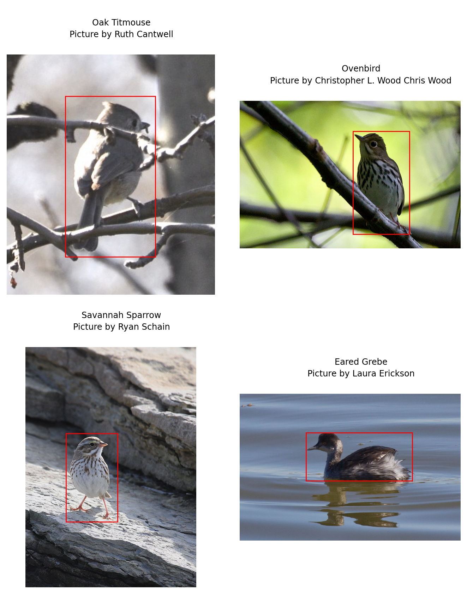
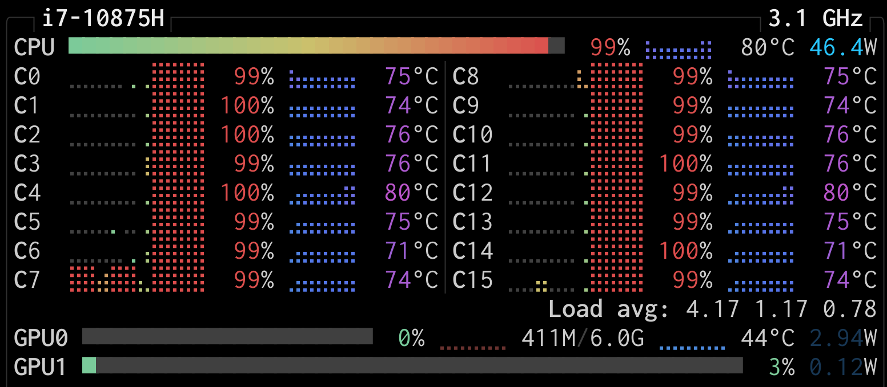

import polars as pl
metadata = pl.read_parquet('metadata.parquet')Data preprocessing
In this section, we look at the images and create new ones that we save to disk as a preprocessing step.
Load the metadata DataFrame
base_dir = '<path-of-the-nabirds-dir>'To be replaced by actual path.
Let’s read our Parquet file back in:
Read in images
To read in the images, there are many options, including:
- PIL.Image.open from Pillow,
cv2.imreadfrom OpenCV,- skimage.io.imread from scikit-image.
Here, we are using imageio.imread from imageio which is an excellent option because it automatically creates a NumPy ndarrays, choosing a dtype based on the image, and it is faster than other options (scikit-image actually uses it now instead of their own implementation).
Dataset class
import os
import imageio.v3 as iio
class NABirdsDataset:
"""NABirds dataset class."""
def __init__(self, metadata_file, data_dir):
self.metadata_file = metadata_file
self.data_dir = data_dir
def __len__(self):
return len(self.metadata_file)
def __getitem__(self, idx):
path = os.path.join(
self.data_dir,
self.metadata_file.get_column('path')[idx]
)
img = iio.imread(path)
species = self.metadata_file.get_column('species')[idx].replace('_', ' ')
subcategory = self.metadata_file.get_column('subcategory')[idx]
if subcategory is not None:
subcategory = subcategory.replace('_', ' ')
photographer = self.metadata_file.get_column('photographer')[idx].replace('_', ' ')
bbx = self.metadata_file.get_column('bb_x')[idx]
bby = self.metadata_file.get_column('bb_y')[idx]
bbw = self.metadata_file.get_column('bb_width')[idx]
bbh = self.metadata_file.get_column('bb_height')[idx]
element = {
'img': img,
'species': species,
'subcategory': subcategory,
'photographer': photographer,
'bbx' : bbx,
'bby' : bby,
'bbw' : bbw,
'bbh' : bbh
}
return elementInstantiate initial class
img_dir = os.path.join(base_dir, 'images')
nabirds_initial = NABirdsDataset(
metadata,
img_dir
)Print an element
next(iter(nabirds_initial)){'img': array([[[ 48, 46, 49],
[ 52, 50, 53],
[ 54, 52, 53],
...,
[ 84, 84, 82],
[ 86, 86, 84],
[ 90, 90, 88]],
[[ 47, 45, 48],
[ 50, 48, 51],
[ 52, 50, 51],
...,
[ 84, 84, 82],
[ 85, 85, 83],
[ 88, 88, 86]],
[[ 51, 49, 50],
[ 53, 51, 52],
[ 54, 52, 53],
...,
[ 83, 83, 81],
[ 83, 83, 81],
[ 87, 87, 85]],
...,
[[222, 221, 226],
[221, 220, 225],
[221, 220, 225],
...,
[ 88, 88, 88],
[ 87, 85, 88],
[ 89, 87, 90]],
[[220, 219, 224],
[220, 219, 224],
[220, 219, 224],
...,
[ 88, 88, 88],
[ 86, 84, 87],
[ 88, 86, 89]],
[[220, 219, 224],
[220, 219, 224],
[220, 219, 224],
...,
[ 88, 88, 88],
[ 85, 83, 86],
[ 87, 85, 88]]], shape=(341, 296, 3), dtype=uint8),
'species': 'Oak Titmouse',
'subcategory': None,
'photographer': 'Ruth Cantwell',
'bbx': 83,
'bby': 59,
'bbw': 128,
'bbh': 228}Note the image values between 0 and 255.
Display a sample of data
Let’s display the first 4 images and their bounding boxes (remember that we have to display the photographers names as a requirement of this dataset):
import matplotlib.pyplot as plt
import matplotlib.patches as patches
fig = plt.figure(figsize=(8, 9))
for i, element in enumerate(nabirds_initial):
ax = plt.subplot(2, 2, i + 1)
plt.tight_layout()
ax.set_title(
f"""
Element {i}
Species: {element['species']}
Additional information: {element['subcategory']}
Picture by {element['photographer']}
""",
fontsize=9,
linespacing=1.5
)
ax.axis('off')
plt.imshow(element['img'])
rect = patches.Rectangle(
(element['bbx'], element['bby']),
element['bbw'],
element['bbh'],
linewidth=1,
edgecolor='r',
facecolor='none'
)
ax.add_patch(rect)
if i == 3:
plt.show()
break
Print info on a sample of data
for i, element in enumerate(nabirds_initial):
print(f'Image dimensions: {element['img'].shape}, data type: {element['img'].dtype}'
)
if i == 3:
breakImage dimensions: (341, 296, 3), data type: uint8
Image dimensions: (427, 640, 3), data type: uint8
Image dimensions: (1024, 730, 3), data type: uint8
Image dimensions: (680, 1024, 3), data type: uint8Notice how the images are all of different sizes. This is a problem because neural networks need images of the same size.
We are also not making use of the bounding boxes this dataset comes with. This means that we have a large number of pixels we know do not contain any bird part.
Lastly, our images are fairly large (often up to 1024 pixels in width or height). Classification models often come with a few variants for a handful of different image sizes, but the most standard size is 224 by 224 (good compromise between detail and speed).
In this section, we do the first step of addressing these problems: we crop the images to the bounding boxes, with a 20% margin, and save them to disk. The rest will be addressed during the data augmentation step (and resizing for the evaluation set).
Cleaning Dataset class
We could write a function to clean our images. Another, more elegant approach is to create a class:
class CleaningDataset:
"""Cleaning dataset class."""
def __init__(self, metadata_file, source_dir, target_dir):
self.metadata_file = metadata_file
self.source_dir = source_dir
self.target_dir = target_dir
def __len__(self):
return len(self.metadata_file)
def __getitem__(self, idx):
"""Returns cropped image and save path."""
# Build paths
read_path = os.path.join(
self.source_dir,
self.metadata_file.get_column('path')[idx]
)
save_path = os.path.join(
self.target_dir,
self.metadata_file.get_column('path')[idx]
)
# Load image
try:
img = iio.imread(read_path)
except Exception as e:
print(f'Error loading {filename}: {e}')
return None, None
# If a file has an alpha channel, drop it
1 if img.shape[2] == 4:
img = img[:,:,:3]
# Get metadata
species = self.metadata_file.get_column('species')[idx].replace('_', ' ')
subcategory = self.metadata_file.get_column('subcategory')[idx]
if subcategory is not None:
subcategory = subcategory.replace('_', ' ')
photographer = self.metadata_file.get_column('photographer')[idx].replace('_', ' ')
# Get bounding box data
bbx = self.metadata_file.get_column('bb_x')[idx]
bby = self.metadata_file.get_column('bb_y')[idx]
bbw = self.metadata_file.get_column('bb_width')[idx]
bbh = self.metadata_file.get_column('bb_height')[idx]
# Crop image with a 20% margin:
# 1. Get the image dimensions (to make sure we don't go out of bounds)
height, width = img.shape[:2]
# 2. Calculate the margin size (20% of the box dimensions)
# We use int() because pixel coordinates must be integers
margin_w = int(bbw * 0.2)
margin_h = int(bbh * 0.2)
# 3. Calculate the new coordinates with the margin
x1 = bbx - margin_w
y1 = bby - margin_h
x2 = bbx + bbw + margin_w
y2 = bby + bbh + margin_h
# 4. Set limits to coordinates to ensure they stay inside the image
# x1 and y1 cannot be less than 0
# x2 and y2 cannot be larger than the image width/height
x1 = max(0, x1)
y1 = max(0, y1)
x2 = min(width, x2)
y2 = min(height, y2)
# 5. Crop
img_cropped = img[y1:y2, x1:x2]
return img_cropped, save_path- 1
- Reason for this step:
Even serious, well curated datasets often contain inconsistent or erroneous data. After playing with this dataset, I realized that at least one image has 4 channels (RGBA, i.e. RGB and the alpha channel). This means that its NumPy array version has 4 instead of 3 dimensions…
This didn’t make any sense to me since all the images were JPEG (it is easy to verify that with command line utilities such as fd) and JPEG images do not have an alpha channel.
So I wrote a function that would return the path of the (first) image with an extra channel and I got 0344/3b69ce35b9404f3eb321100c93dd2b43.jpg.
It appears to be a JPEG image. However, when passing it to the identify command from ImageMagick, I realized that it was in fact a PNG image mislabelled as a JPEG…
Here is an equivalent way to show this in Python:
from PIL import Image
img = os.path.join(img_dir, '0344/3b69ce35b9404f3eb321100c93dd2b43.jpg')
with Image.open(img) as img:
print(f'The actual format of the image is {img.format}.')The actual format of the image is PNG.Create the clean data in parallel
Built-in multiprocessing in Python can be done with either of the ProcessPoolExecutor class from the concurrent.futures module or the Pool class from the multiprocessing package.
Let’s use the first one:
from concurrent.futures import ProcessPoolExecutor
from tqdm import tqdm # to display a progress barLet’s instantiate our CleaningDataset:
cleaned_img_dir = os.path.join(base_dir, 'cleaned_images')
dataset_to_clean = CleaningDataset(
metadata_file=metadata,
source_dir=img_dir,
target_dir=cleaned_img_dir
)We can now create a helper function:
def process_idx(i):
"""Helper function for the parallel worker."""
img, path = dataset_to_clean[i]
if img is not None:
# Create target directory if it doesn't exist
os.makedirs(os.path.dirname(path), exist_ok=True)
# Save cleaned image
iio.imwrite(path, img)
return 1 # Success
return 0 # FailureAnd run it in parallel:
# Use as many workers as you have CPU cores
with ProcessPoolExecutor() as executor:
# Map indices to the process function
results = list(tqdm(
executor.map(process_idx, range(len(dataset_to_clean))),
total=len(dataset_to_clean),
desc='Cleaning Images'
))
print(f'Done. {sum(results)} images processed.')Done. 48562 images processed.You can watch the parallel work live with an application such as htop (on your machine or the cluster) or btop (on your machine).
Here is a screenshot I took from btop on my machine while creating the cleaned images. You can see that my 16 cores are working in parallel:

Instantiate treated class
Now we can instantiate a new instance of our Dataset class with the cropped data:
nabirds = NABirdsDataset(
metadata,
cleaned_img_dir
)Print info on a sample
for i, element in enumerate(nabirds):
print(f'Image new dimensions: {element['img'].shape}, data type: {element['img'].dtype}'
)
if i == 3:
breakImage new dimensions: (318, 178, 3), data type: uint8
Image new dimensions: (398, 227, 3), data type: uint8
Image new dimensions: (528, 305, 3), data type: uint8
Image new dimensions: (312, 688, 3), data type: uint8Display a sample
Let’s display the first 4 cleaned images to make sure they look like what we expect:
fig = plt.figure(figsize=(8, 9))
for i, element in enumerate(nabirds):
ax = plt.subplot(2, 2, i + 1)
plt.tight_layout()
ax.set_title(
f"""
Element {i}
Species: {element['species']}
Additional information: {element['subcategory']}
Picture by {element['photographer']}
""",
fontsize=9,
linespacing=1.5
)
ax.axis('off')
plt.imshow(element['img'])
if i == 3:
plt.show()
break